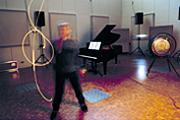
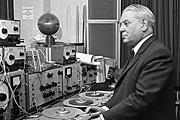
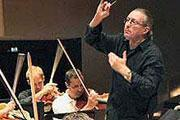
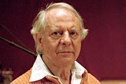

Germany’s Radio Station
The Importance of Germany’s Radio Stations in Promoting Contemporary Music
After 1945 the broadcasting network in Germany was completely reconstructed. This led to the emergence, particularly in the Federal Republic, of radio stations that have rendered outstanding services to contemporary music.

The SWR experimentalstudio in Freiburg: A musician draws notes and signs with light. Photo © SWR/Hollenbach
Re-education? A rather disconcerting word to use in the context of an old cultural nation informing about what is actually a sphere of excellence. And yet, anyone who talks of the outstanding cultural reconstruction achievements of the German radio stations after the Second World War has to admit that here an occupying power imposed completely new, highly innovative broadcasting structures on the Germans. For from 1933 to 1945, the years of the National Socialist regime, broadcasting in Germany was exclusively Hitler’s propaganda instrument.
Broadcasting as a pillar of societal order
After the war the occupying powers used broadcasting to stabilise the political post-war order. The organisation of the West German broadcasters was based on the model of the British BBC as largely independent institutions free of state intervention. In 1950 five regional stations merged to form the ARD, Arbeitsgemeinschaft öffentlich-rechtlicher Rundfunkanstalten der Bundesrepublik Deutschland (Association of Public Service Broadcasters of the Federal Republic of Germany). In contrast, in East Germany Rundfunk der DDR (Radio of the GDR) was launched as a new broadcaster controlled by the state. In both parts of the divided nation these new broadcasting structures were used to pursue societal and political goals, which were also reflected in their music programming.The upshot, however, was very different: in the East realism was in demand, music with a broad appeal, catering for the taste of the masses were the orders of the day. Quite in contrast to the West: here the radio stations also offered musicians an experimental stage far removed from mass audience appeal. An artistic and aesthetic new beginning after the Nazi era was the aim of young composers after 1945. The effects of this fundamentally different perception of the cultural assignment of broadcasters as well as of the state itself have lingered up to the present day. Hence art from the GDR era is now often panned for lacking an innovative spirit, for displaying undue aesthetic caution and for cosying up to the regime. Whereas the avant-garde art of the West can claim to have ventured forth into much aesthetically uncharted territory. But since few people are interested in this, it has gained a reputation of being of questionable societal relevance.
Avant-garde art as a weapon against communism

Herbert Eimert, Photo © WDR, Historisches Archiv
The Allies are thus often criticised for having deliberately promoted abstract art, i.e. art which tends to ignore social problems, in order to weaken left-wing positions. The abstract painters of the New York school, Jackson Pollock in particular, were indeed bankrolled directly by the CIA. The subsidisation of art was without a doubt part of the propaganda in the Cold War between the capitalist West and the communist East. But be that as it may, the attempts to establish radio as a site of innovative art productions beyond the realm of market forces have definitely borne remarkable results. Herbert Eimert, for example, who had already propagated radical concepts of atonal music in the 1920s, was finally able to realise his visions in the studio for electronic music at Nordwestdeutschem Rundfunk (North-West German Radio) in Cologne. Shortly afterwards leading avant-garde composers such as Karlheinz Stockhausen, Henri Pousseur and Karel Goeyvaerts created complex tape music with sinus generators and other utensils of radio and measurement techniques. In 1971 Südwestfunk (South-West Radio) in Freiburg set up its own experimental studio which became famous above all for its realisation of great works by Luigi Nono.
Radio as a promoter

Sylvain Cambreling, chief conductor of the SWR Baden-Baden and Freiburg Symphony Orchestra, Photo: SWR/Lamparter
Sylvain Cambreling

The composer Karlheinz Stockhausen, Photo: © WDR/Klaus Barisch
Apart from the legendary Donaueschingen Musiktage, still the most important “trade fair” for contemporary music in Germany with world-wide transmission, other festivals such as, for example, the Wittener Tage für neue Kammermusik (Witten Weekend for New Chamber Music) are supported by radio stations. Concert series funded by broadcasters such as “Das Neue Werk” (NDR Hamburg), “Musik der Zeit” (WDR Cologne ) and “musica viva” (BR Munich) round off the picture. Thus radio has been a key player in music history in the Federal Republic of Germany. When, at some point, the development of music in the second half of the 20th century is chronicled, it will be interesting to see how many of the musical innovations had their origin in the composer assignments of the radio stations. No other institution of music programming for the public would have been able to effect any comparable achievement. One can only hope that this innovative influence in these times of funding shortage and commercial pop radio does not disappear.